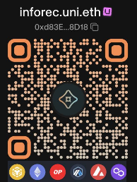

社群與資源
歡迎您加入我們的社群進行討論。
社群群組：
資源： 為讓系統有足夠的資源支持運作，歡迎您提供資源：
- 志工：如果您有意願協助文件編輯，或辦理教育訓練，請與我們聯絡。
- 捐助：為利於軟體推展，並從世界各地支持者取得捐助，我們接受虛擬貨幣
- 主網(鏈)類型：Ethereum、Polygon (PoS)、Optimism、Arbitrum One、Base、BNB Chain
- 幣別：如BTC、ETH、只BNB、SOL、DOGE....等，只要能在上述主網(鏈)類型交換的幣都可以。
- 錢包網址(ENS)：inforec.uni.eth
- 錢包地址：0xd83E877e7cdEEd8F3997Ebda2A425A2Cc2668D18
- 錢包地址QR Code：

備註：
- 虛擬貨幣：在許多的地區，虛擬(加密)貨幣並不是貨幣，因為它不穩定，僅類似為代幣如游戲代幣，但可以全球化支付、沒有區域限制，容易取得及交換，且成本低廉。
- 有關錢包網址(ENS)
- uniswqp錢包：提供免費的ENS，6種鍵都可以使用。uniswap互轉只要輸入名稱，不用輸入"uni.eth"，例如inforec。
- Phantom錢包：可以辨識使用Ethereum、Polygon (PoS)2種鏈。
- 其它錢包軟體通常只能辨識使用ERC20鏈，如幣安Web3錢包、Trust Wallet、MetaMask。
- 本軟體理念，將真實的記錄轉為數位化，數位化的資訊，提供現實生活動決策運用，因此接受虛擬貨幣捐助。
- 激勵：本軟體免費提供大眾使用，若能獲得使用者捐助，對於軟體提供者是一種鼓勵，也能讓我們投入更多的資源，讓軟體更加的完善
- 反饋捐助：如有獲得捐助，我們將提撥一定比例資源給社會慈善團體、或免費軟體供者，期待更好的社會環境，